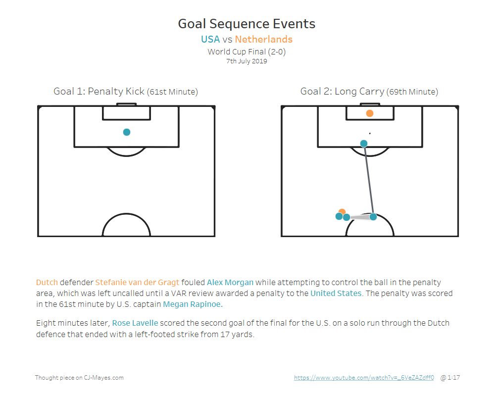
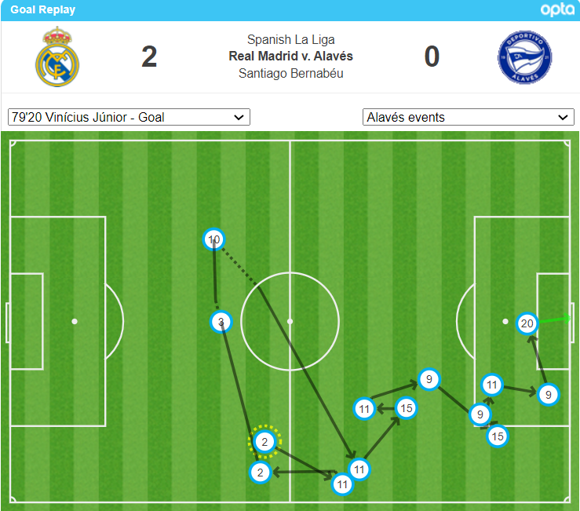
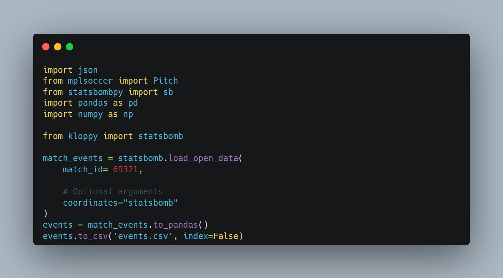
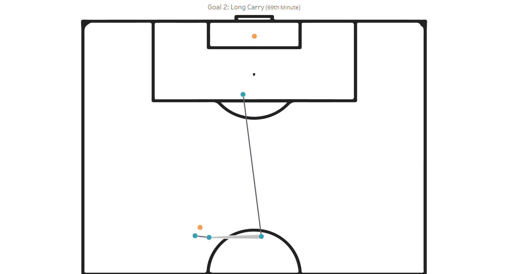
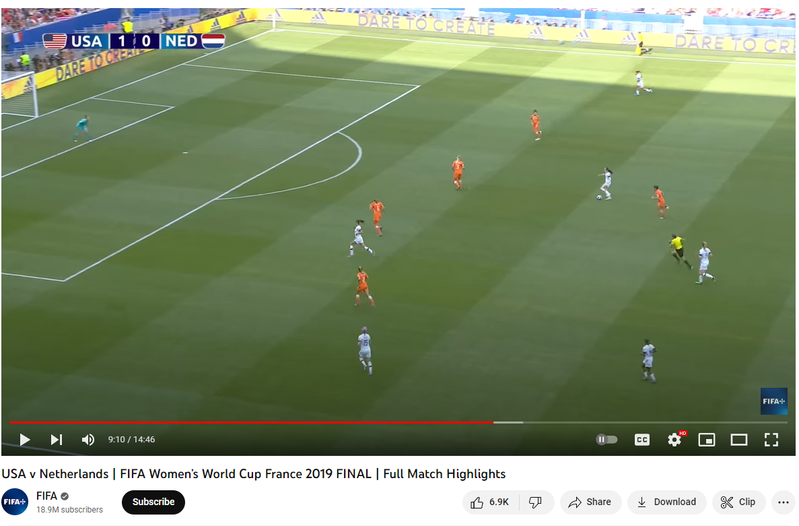
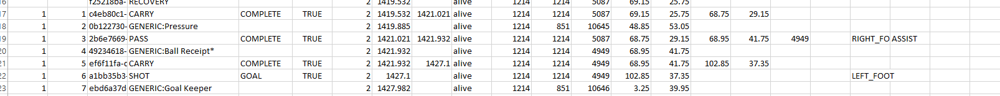
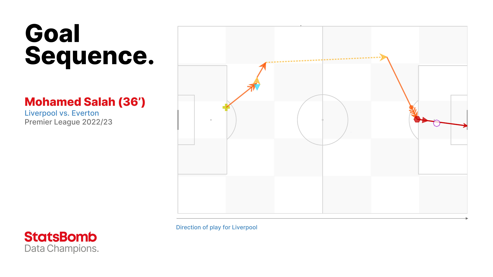
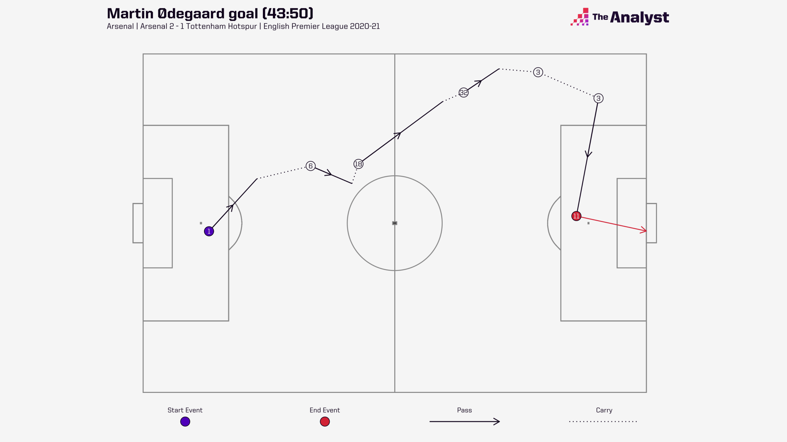

Hi all,
Kind of incredible we are already into March. These months really are rolling past. I've got a few days off this week, I'm excited to catch up with family and get a few workouts in before doing the Paris half mara this weekend.

Todays blog is a bit of a thought blog around goal sequencing using soccer data. I'll share some code, some data transformations in Tableau as well some overall thoughts in general when it comes to creating a visual of sequenced events.
Here is an example from Opta's Twitter page.

So what are goal sequences?
Sequences are passages of play. They can be anything from defensive actions, duals, passes or shots. Sequences end when there is a stoppage in play.
When a team has possession they will join these sequences up together. We can then take these events and try join them up, plotting them on the pitch.
Jonny Whitmore wrote a great article on sequenced events at the Analyst last year. You can read it here.
Jonny goes into further detail around how a series of uninterrupted passes leading to a shot would be counted as a sequence. The shot ends this sequence but suppose the keeper saves it and pushes it out for a corner. Although the sequence ends, the possession continues until the opposition gains control of the ball. The original sequence and the sequence initiated from the corner would both be included under the same possession for the team taking the shot.
Now I was pretty excited to go away and start looking at this in action, and realised instantly it was a little tough than first imagined.

Above is a code snippet I used to access some simplified StatsBomb data, using the Womens 2019 World Cup Final as the example.
So I gave it a go, you can check the visualisation and the code from the top of the page under the title header using the icons.
What did trying to plot this data teach me?
Football can be a scrappy game. Unless you have proper context behind the sequence of events, it's actually quite hard to understand sometimes from data on it's own. In my example below you can see how Rose Lavelle scored the second goal of the final for the U.S. on a solo run through the Dutch defence that ended with a left-footed strike from 17 yards.

I've attached the summary video of the game showing the different actions on the dashboard, this actually helped me understand the data more having seen the game.

It's really hard to show a sequence of play when possession changes rapidly, during duels. For example, I had looked previously at some games that scored from a corner that had multiple duels in it. Really tough to visualise!
The second thing is, some events need to be excluded from the sequence. You'll see in my data there will be additional rows of position of players.

Whilst we can string the sequence of events together, some carries and passes don't necessarily 'come alive' when visualising. I think this could be for a combination of reasons, like the number of moving parts. 22 players are on the pitch but if we only map those that are on the ball at a moment in time, we effectively lose a lot of context. On the flip side, how do we show continuous pressure/challenges from players over a duration of multiple sequences? See how it becomes a little complex.
Finally and I guess this is a general rule of thumb with data visualisation, does it showcase and truly reflect the story in the best means possible?
So when do goal sequences work well?
Well this example of Mo Salah taking 11 seconds from box to box was a nice example.

What this visual and the one below from the analysts blog have in common is the way of showing passes vs carries using dashed and block lines. (dashed lines are a little hard to do in Tableau, less so in Python/R etc i'm sure.)

Simple in design, beautifully presented and is able to provide context to the different carries, passes and part of the pitch used in building up to the goal.
But sequences can also be used at the aggregated level too. Whilst these goal sequences provide pretty pitch charts, we can also start to analyse the impact of players through sequences.
A few examples could be analysing turnover, build up of attack, number of successful passes in a row, direction of attack. You will see in a lot of games on telly some more simple metrics around possession, metres run and potentially duels too. Think of this as just that next step on.
So, what tips do I have for those wanting to build the visual in Tableau?
For lines you will want to union your dataset to create a start and an end node! If you read any of my other soccer blogs you will have seen anything with lines gets unioned, whereas player position or shot data can stay as it is, as you only need one mark to represent that player/action.
In Tableau if you map the pitch onto the background you can benefit from creating multiple 'layers'.
Check your data to make sure that you don't need to reflect the data depending if your co-ordinates are plotted on a full or a half pitch.
Cross reference your data with summary video snippets
Label passes and carries with different indicators as these are different actions. Dashed vs block works well, if not try a different colour or thickness of line. I attempted to use a comet style for the pass to indicate direction.
Decide how much detail you want to put into your chart. Mine were very basic, but you could add action numbers, player details and use colour more effectively.
Narrow your dataset down to start and end at appropriate events. For example a throw in or free kick would be a great starting point. A goal seems like a plausible end point. Perhaps you also may want to showcase possession up the the point of a goal scoring free kick. You'll see in my case, there was a penalty. Wouldn't it be nice to know what events happened for that to occur?
Generally good to rank your events in your data.
Anyway, thanks for listening to my rambling. Excited to see where you take it.
LOGGING OFF,CJ